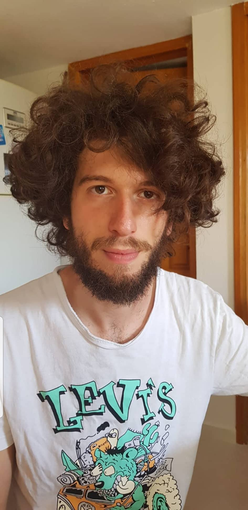
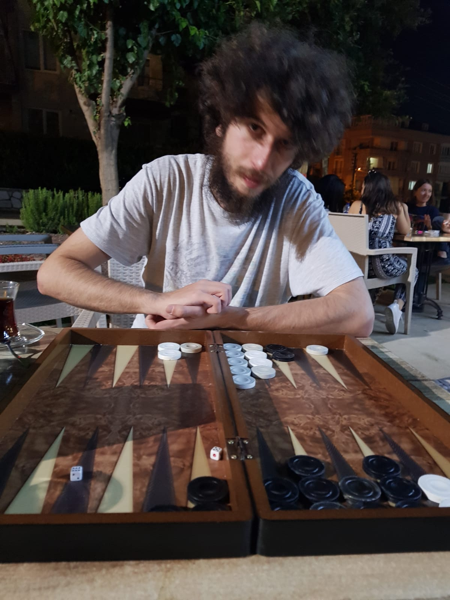
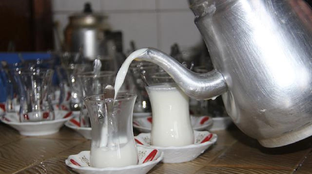

Size biraz 2018 senesinde başıma gelen en güzel şeyden bahsedeceğim.
Kendisi:
O benim AŞKIM!
Aşağıda onun bir fotoğrafını görebilirsiniz:
O an sakallarını kestiğim için hiç mutlu değildi fakat bence sehr schön kesmiştim.

Tamay çok yetenekli bir insan. Aşağıdaki fotoğrafta onun adeta beden bulmuş bir tavla tanrısı olduğunu net bir şekilde görebilirsiniz.
Onunla tavla oynamak isterseniz ona şu adresten ulaşabilirsiniz.
TamaymailAşağıda vereceğim linkte de onun en sevdiği yemeği görebilirsiniz.
İnek resmiVelhasıl kelam ben onu 176 54968948sayısının büyüklüğünden daha çok seviyorum.
Beni dinlediğiniz için teşekkür ederim arkadaşlar. Herkes sütünü içip uyusun.
